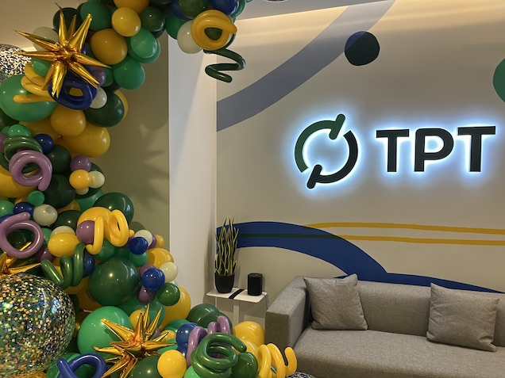
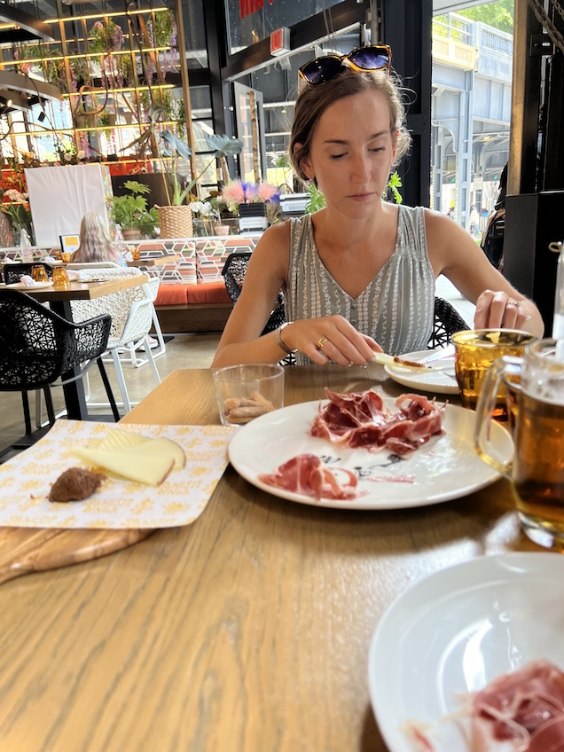
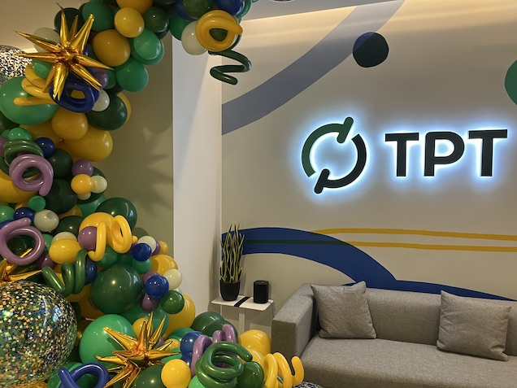
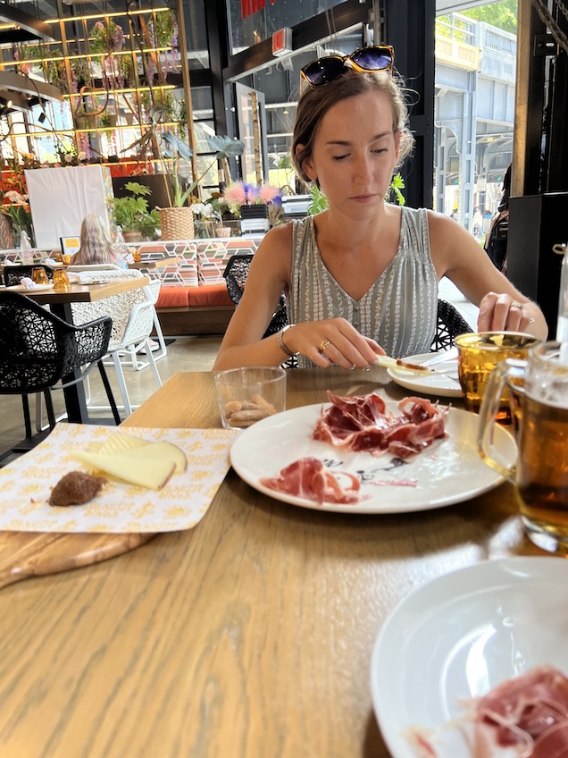

A Look Into My Journey

My Experience

In my career as a curriculum developer, I have worked on several proprietary projects at education technology companies.
Edmentum
Website LinkIn my time at Edmentum, I authored and reviewed 2,000+ math modules and practice items for their Exact Path and Study Island products. I also supported the development and review of instructional math frameworks.
TPT (formerly Teachers Pay Teachers)
Website LinkI own a storefront on the Teachers Pay Teachers platform, called The Bespoke Bulletin Board, where I provide teachers immediate access to helpful resources for their classrooms.
Movia Robotics
Website LinkIn my role as a curriculum developer, I mapped out an entire curricular map framework for robot-assisted instruction (RAI), a nontraditional teaching method for children with autism. I scripted, coded, and tested 300+ instructional lessons and activities and maintained 4 customer-facing curricular documents.
 


